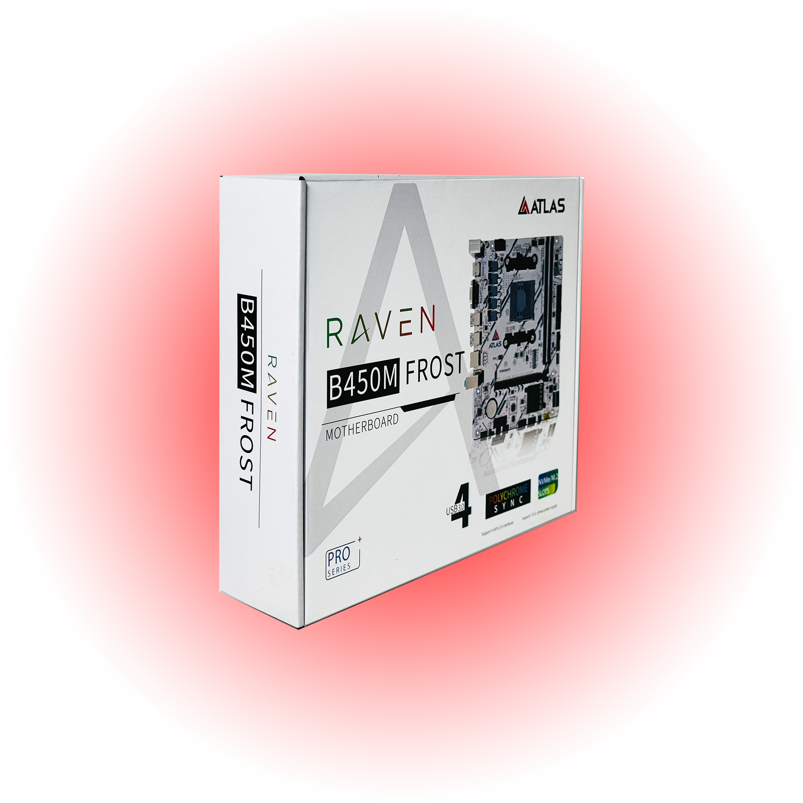
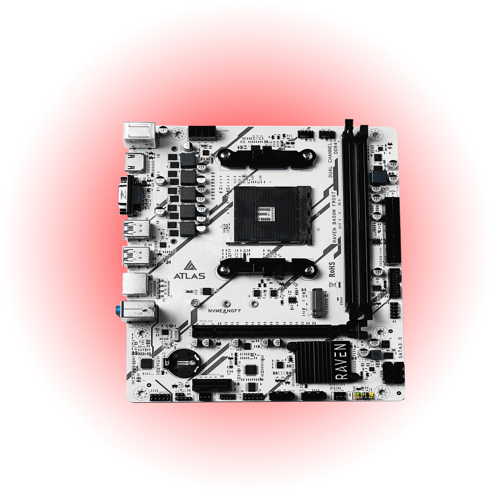
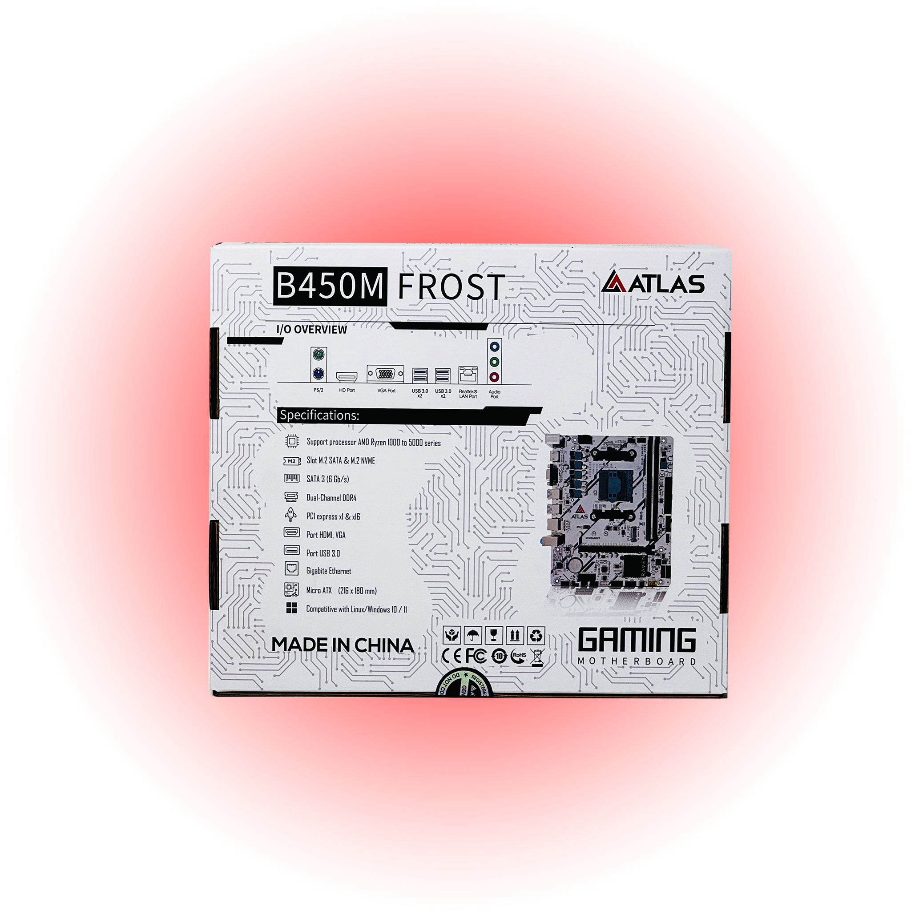

Motherboard Series
ATLAS RAVEN B450M Frost - Micro-ATX AM4 Motherboard with Ryzen 1000-5600 Support
Wide CPU Support - Compatible with AMD Ryzen 1st-5th Gen processors on the AM4 socket
Compatible with AMD Ryzen 1st-5th Gen processors on the AM4 socketWide CPU Support
Dual DDR4 slots supporting up to 32 GB and 3200 MHz (OC)High-Speed Memory
4 x SATA III ports plus 1 x M.2 slot for SATA & NVMe SSDsFlexible Storage Options

MB450
Motherboard
Overview
Built for real-world performance.
Wide CPU Support - Compatible with AMD Ryzen 1st-5th Gen processors on the AM4 socket. High-Speed Memory - Dual DDR4 slots supporting up to 32 GB and 3200 MHz (OC). Flexible Storage Options - 4 x SATA III ports plus 1 x M.2 slot for SATA & NVMe SSDs. Integrated Display Outputs - HDMI and VGA ports for CPUs with Radeon Graphics. Reliable Connectivity - Gigabit LAN, multiple USB 3.0/2.0 ports, and HD audio.
MB450SKU
MotherboardCategory
Wide CPU Support
Compatible with AMD Ryzen 1st-5th Gen processors on the AM4 socket
High-Speed Memory
Dual DDR4 slots supporting up to 32 GB and 3200 MHz (OC)
Flexible Storage Options
4 x SATA III ports plus 1 x M.2 slot for SATA & NVMe SSDs
Gallery


Specifications
Wide CPU Support
- Compatible with AMD Ryzen 1st-5th Gen processors on the AM4 socket
High-Speed Memory
- Dual DDR4 slots supporting up to 32 GB and 3200 MHz (OC)
Flexible Storage Options
- 4 x SATA III ports plus 1 x M.2 slot for SATA & NVMe SSDs
Integrated Display Outputs
- HDMI and VGA ports for CPUs with Radeon Graphics
| Feature | Details |
|---|---|
| SKU | MB450 |
| Category | Motherboard |
| Availability | In stock |
| Wide CPU Support | Compatible with AMD Ryzen 1st-5th Gen processors on the AM4 socket |
| High-Speed Memory | Dual DDR4 slots supporting up to 32 GB and 3200 MHz (OC) |
| Flexible Storage Options | 4 x SATA III ports plus 1 x M.2 slot for SATA & NVMe SSDs |
| Integrated Display Outputs | HDMI and VGA ports for CPUs with Radeon Graphics |
| Reliable Connectivity | Gigabit LAN, multiple USB 3.0/2.0 ports, and HD audio |